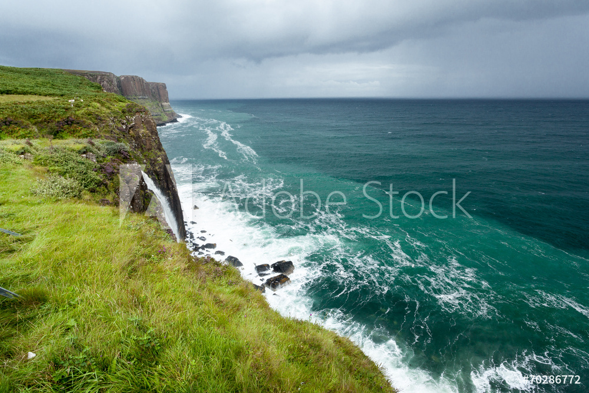
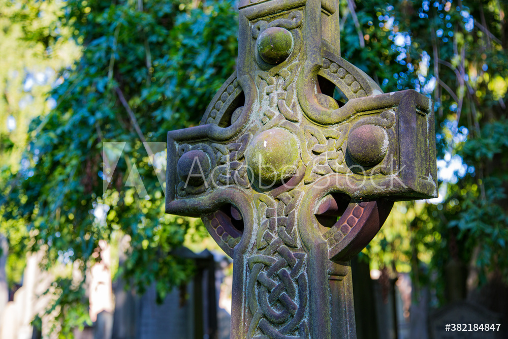

About us
Los inicios de Godhalla Craft se remontan a febrero-marzo del 2020, durante el que es a dí de hoy el mejor viaje de mi vida a Edimburgo, junto a mi hermano Rafa. Fuimos a pasar una semana de vacaciones tras ambos pasar muchas horas estudiando y trabajando, en principio teníamos pensado ir a Amsterdam pero cambiamos de destino a Edimburgo, y efectivamente acertamos. Una ciudad preciosa, con una magia que la hace única, un clima místico y una natura inigualable. Pasamos una semana de aquí para allá visitando tanto como pudimos ya que queríamos ir a los Highlands pero había un tifón que nos hizo imposible el trayecto…
Así fue como un miércoles por la mañana en nuestro paseo matinal al super, decidimos volver al hostal a coger las cosas por otro camino y encontramos un mercadillo de artesanía. Yo hasta entonces había hecho una feria pero como artista 3d vendiendo impresiones como la que véis en al fotografía de abajo, el carnero de aries ferrus, mi grupo de recreación medieval.
Me quedé anonadado, era todo precioso. El mercado estaba formado por unas 6 paraditas, super ambientadas en su cultura, pude diferenciar símbolos celtas, nórdicos y pictos. Había trabajo en cuero, joyería, cuchillería, juguetes de madera, ropa tradicional escocesa (muy elaborada por cierto) y comida. Fue en una de las tiendas de joiería y artesanía donde conocí a Mathew un señor muy amable de ojos azules y pelo corto blanco que a pesar de su avanzada edad se movía y relacionaba con una fluidez admirable. Procedí a acercarme a él, me dijo algo que no entendí (no sé si en gaélico) y mi cara le hizo entender que no entendía nada, su siguiente palabra fue morning… Hablamos un rato mientras Mathew iva cobrando a las demás personas, me sorprendió la rapidez en laque voló todo en unos 15 min había vendido 1/5 de su género. Me contó que se dedicaba a ir a los Highlands de pueblo en pueblo a recoger el género de los artesanos durante la semana y lo vendía en Edimburgo y Glasgow en sus respectivos mercados, le hablé de lo que hacía y le mostré el carnero, sorpendentemente para mi se mostró super sorprendido y me preguntó varias cosas tras esa conversación procedí a comprar un libro de cuero y un collar de amatista y ónix…
Volví a Barcelona con el corazón encogido, no quería irme de Edimburgo ni separarme de Rafa, pues él es de Castellón y nos vemos muy de vez en cuando… Tras dos semanas de cambios de hábitos muy felizes para mi se anunció la quarentena… recuerdo el día exacto 13 de marzo.
Sucedieron muchísimas cosas, todo lo que consideraba esencial en mi vida se fue al lastre… Pero no hay amanecer sin noche, y me alegro enormemente que así fuera. Fue el inicio de un sinfín de cambios en mi vida y de una evolución que jamás habría imaginado realizar. Fue a medianos de mayo cuando recibí mi primer paquete de piedras semipreciosas y la masilla de modelaje y me puse manos a la obra. Me dí cuenta que a diferencia de con mis otros trabajos, no me cansaba, podía estarme 20h creando y seguir, y siempre venían nuevas ideas y proyectos a la cabeza… así que decidí centrarme al 100%, más tras conocer a dos personas que me ayudaron a romper barreras mentales y a tener fe.
La historia continúa, pero no en este post. El primero de muchos!